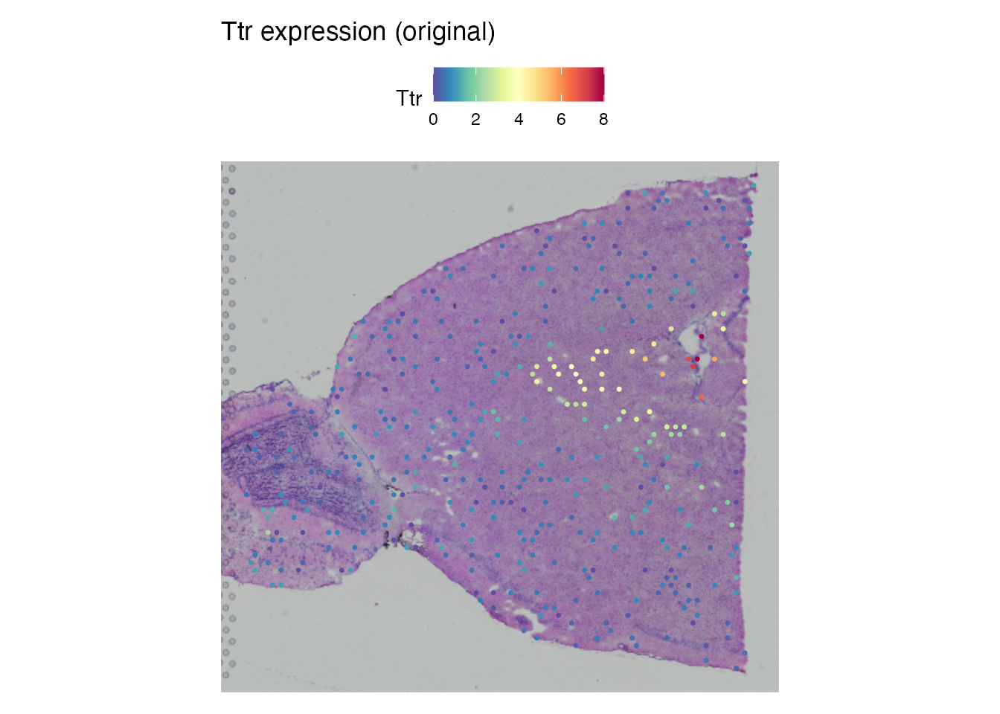
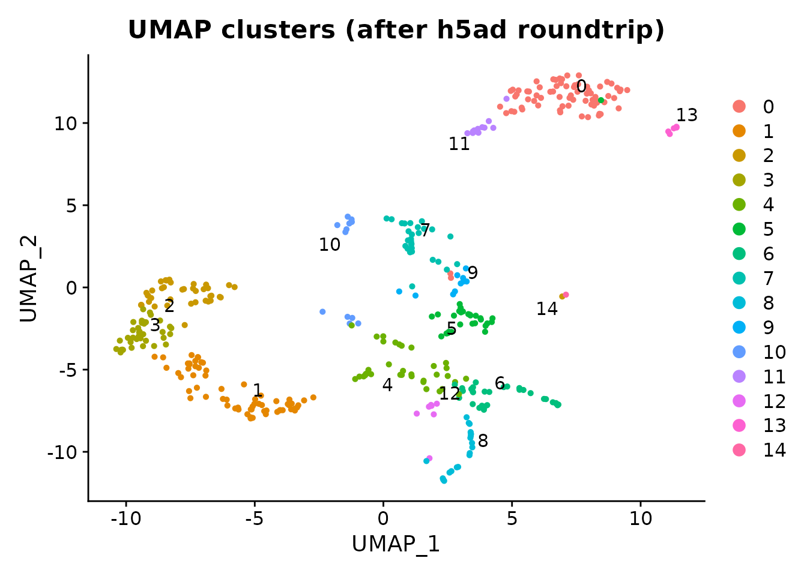
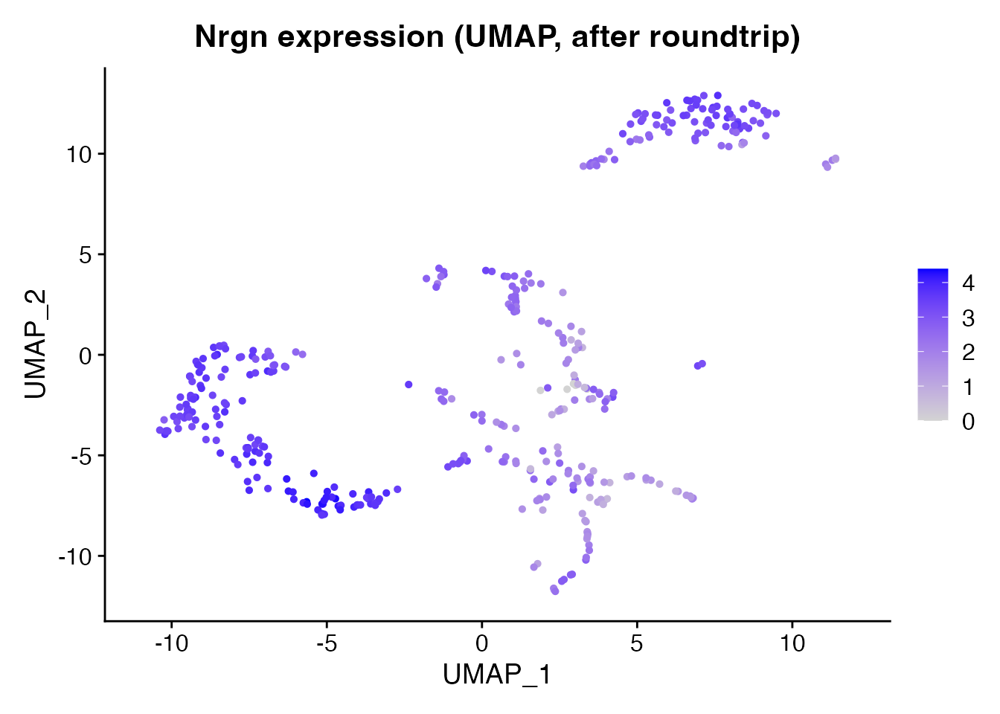

Introduction
Spatial transcriptomics spans a range of technologies – from spot-based platforms like Visium and Slide-seq to subcellular-resolution methods like Xenium and MERFISH. scConvert handles spatial data from any platform that produces a Seurat object or h5ad file, preserving coordinates, images, and metadata through format conversion.
Supported spatial technologies
| Technology | Resolution | Coordinates | Images | h5ad roundtrip |
|---|---|---|---|---|
| 10x Visium | ~55 um spots | Gridded | H&E tissue | Full support |
| 10x Visium HD | 2–8 um bins | Dense grid | H&E tissue | Coordinates + image |
| Slide-seq v2 | ~10 um beads | Continuous | None | Coordinates |
| 10x Xenium | Subcellular | Molecule-based | DAPI/IF | Coordinates via FOV |
| MERFISH (Vizgen) | Subcellular | Molecule-based | DAPI | Coordinates via FOV |
| CosMx (NanoString) | Subcellular | Molecule-based | Morphology | Coordinates via FOV |
| CODEX (Akoya) | Cell-level | Centroids | Fluorescence | Coordinates |
| Stereo-seq (BGI) | ~0.5 um | Continuous | H&E | Coordinates |
All technologies store spatial coordinates in the h5ad
obsm/spatial field. Visium additionally stores tissue
images and scale factors in uns/spatial.
Visium example: mouse brain
We demonstrate a full roundtrip with the shipped Visium demo dataset (400 mouse brain spots, 1,500 genes, 15 clusters).
spatial_path <- system.file("extdata", "spatial_demo.rds", package = "scConvert")
brain <- readRDS(spatial_path)
cat("Spots:", ncol(brain), "\n")
#> Spots: 400
cat("Genes:", nrow(brain), "\n")
#> Genes: 1500
cat("Image:", paste(names(brain@images), collapse = ", "), "\n")
#> Image: anterior1
cat("Assay:", paste(names(brain@assays), collapse = ", "), "\n")
#> Assay: SpatialSpatial gene expression
Ttr (Transthyretin) is expressed in the choroid plexus and shows strong spatial localization.
SpatialFeaturePlot(brain, features = "Ttr", pt.size.factor = 1.6) +
ggplot2::ggtitle("Ttr expression (original)")
Convert and load back
h5ad_file <- tempfile(fileext = ".h5ad")
writeH5AD(brain, h5ad_file, overwrite = TRUE)
brain_rt <- readH5AD(h5ad_file, verbose = FALSE)
cat("Roundtrip spots:", ncol(brain_rt), "\n")
#> Roundtrip spots: 400
cat("Roundtrip genes:", nrow(brain_rt), "\n")
#> Roundtrip genes: 1500
cat("Image preserved:", length(brain_rt@images) > 0, "\n")
#> Image preserved: TRUEVerify coordinate preservation
cat("Barcodes match:", all(colnames(brain) == colnames(brain_rt)), "\n")
#> Barcodes match: TRUE
cat("Features match:", all(rownames(brain) == rownames(brain_rt)), "\n")
#> Features match: TRUE
cat("Clusters match:",
all(as.character(brain$seurat_clusters) ==
as.character(brain_rt$seurat_clusters)), "\n")
#> Clusters match: TRUEClusters preserved through roundtrip
DimPlot(brain_rt, reduction = "umap", group.by = "seurat_clusters",
label = TRUE, repel = TRUE) +
ggplot2::ggtitle("UMAP clusters (after h5ad roundtrip)")
Another gene: Nrgn
Nrgn (Neurogranin) is a cortical neuron marker with a different spatial pattern than Ttr.
# Round-tripped objects may have only the counts layer populated (scConvert
# writes X from counts when no normalised data is present). Ensure a data
# layer exists before plotting. readH5AD() names the default assay "RNA"
# unless assay.name is passed, so look up the actual default rather than
# assuming the input's assay name survives the roundtrip.
rt_assay <- SeuratObject::DefaultAssay(brain_rt)
if (!"data" %in% SeuratObject::Layers(brain_rt[[rt_assay]]) ||
length(SeuratObject::GetAssayData(brain_rt, layer = "data")) == 0L) {
brain_rt <- Seurat::NormalizeData(brain_rt, verbose = FALSE)
}
FeaturePlot(brain_rt, features = "Nrgn", reduction = "umap") +
ggplot2::ggtitle("Nrgn expression (UMAP, after roundtrip)")
Working with other spatial platforms
For any h5ad file with spatial coordinates, the same workflow applies:
# Load spatial h5ad from any platform
obj <- readH5AD("merfish_data.h5ad")
# Check what was detected
cat("Images:", paste(names(obj@images), collapse = ", "), "\n")
# Convert to another format
scConvert("merfish_data.h5ad", "merfish_data.h5seurat")Technologies without tissue images (Slide-seq, MERFISH, CODEX) store
only coordinates in obsm/spatial. scConvert reads these
into the Seurat object and makes them available for plotting and
downstream analysis.
Session Info
sessionInfo()
#> R version 4.6.0 (2026-04-24)
#> Platform: x86_64-pc-linux-gnu
#> Running under: Ubuntu 24.04.4 LTS
#>
#> Matrix products: default
#> BLAS: /usr/lib/x86_64-linux-gnu/openblas-pthread/libblas.so.3
#> LAPACK: /usr/lib/x86_64-linux-gnu/openblas-pthread/libopenblasp-r0.3.26.so; LAPACK version 3.12.0
#>
#> locale:
#> [1] LC_CTYPE=C.UTF-8 LC_NUMERIC=C LC_TIME=C.UTF-8
#> [4] LC_COLLATE=C.UTF-8 LC_MONETARY=C.UTF-8 LC_MESSAGES=C.UTF-8
#> [7] LC_PAPER=C.UTF-8 LC_NAME=C LC_ADDRESS=C
#> [10] LC_TELEPHONE=C LC_MEASUREMENT=C.UTF-8 LC_IDENTIFICATION=C
#>
#> time zone: UTC
#> tzcode source: system (glibc)
#>
#> attached base packages:
#> [1] stats graphics grDevices utils datasets methods base
#>
#> other attached packages:
#> [1] ggplot2_4.0.3 Seurat_5.5.0 SeuratObject_5.4.0 sp_2.2-1
#> [5] scConvert_0.2.0
#>
#> loaded via a namespace (and not attached):
#> [1] RColorBrewer_1.1-3 jsonlite_2.0.0 magrittr_2.0.5
#> [4] spatstat.utils_3.2-2 farver_2.1.2 rmarkdown_2.31
#> [7] fs_2.1.0 ragg_1.5.2 vctrs_0.7.3
#> [10] ROCR_1.0-12 spatstat.explore_3.8-0 htmltools_0.5.9
#> [13] sass_0.4.10 sctransform_0.4.3 parallelly_1.47.0
#> [16] KernSmooth_2.23-26 bslib_0.10.0 htmlwidgets_1.6.4
#> [19] desc_1.4.3 ica_1.0-3 plyr_1.8.9
#> [22] plotly_4.12.0 zoo_1.8-15 cachem_1.1.0
#> [25] igraph_2.3.0 mime_0.13 lifecycle_1.0.5
#> [28] pkgconfig_2.0.3 Matrix_1.7-5 R6_2.6.1
#> [31] fastmap_1.2.0 MatrixGenerics_1.24.0 fitdistrplus_1.2-6
#> [34] future_1.70.0 shiny_1.13.0 digest_0.6.39
#> [37] S4Vectors_0.50.0 patchwork_1.3.2 tensor_1.5.1
#> [40] RSpectra_0.16-2 irlba_2.3.7 GenomicRanges_1.64.0
#> [43] textshaping_1.0.5 labeling_0.4.3 progressr_0.19.0
#> [46] spatstat.sparse_3.1-0 httr_1.4.8 polyclip_1.10-7
#> [49] abind_1.4-8 compiler_4.6.0 bit64_4.8.0
#> [52] withr_3.0.2 S7_0.2.2 fastDummies_1.7.6
#> [55] MASS_7.3-65 tools_4.6.0 lmtest_0.9-40
#> [58] otel_0.2.0 httpuv_1.6.17 future.apply_1.20.2
#> [61] goftest_1.2-3 glue_1.8.1 nlme_3.1-169
#> [64] promises_1.5.0 grid_4.6.0 Rtsne_0.17
#> [67] cluster_2.1.8.2 reshape2_1.4.5 generics_0.1.4
#> [70] hdf5r_1.3.12 gtable_0.3.6 spatstat.data_3.1-9
#> [73] tidyr_1.3.2 data.table_1.18.2.1 BiocGenerics_0.58.0
#> [76] BPCells_0.3.1 spatstat.geom_3.7-3 RcppAnnoy_0.0.23
#> [79] ggrepel_0.9.8 RANN_2.6.2 pillar_1.11.1
#> [82] stringr_1.6.0 spam_2.11-3 RcppHNSW_0.6.0
#> [85] later_1.4.8 splines_4.6.0 dplyr_1.2.1
#> [88] lattice_0.22-9 survival_3.8-6 bit_4.6.0
#> [91] deldir_2.0-4 tidyselect_1.2.1 miniUI_0.1.2
#> [94] pbapply_1.7-4 knitr_1.51 gridExtra_2.3
#> [97] Seqinfo_1.2.0 IRanges_2.46.0 scattermore_1.2
#> [100] stats4_4.6.0 xfun_0.57 matrixStats_1.5.0
#> [103] stringi_1.8.7 lazyeval_0.2.3 yaml_2.3.12
#> [106] evaluate_1.0.5 codetools_0.2-20 tibble_3.3.1
#> [109] cli_3.6.6 uwot_0.2.4 xtable_1.8-8
#> [112] reticulate_1.46.0 systemfonts_1.3.2 jquerylib_0.1.4
#> [115] Rcpp_1.1.1-1.1 globals_0.19.1 spatstat.random_3.4-5
#> [118] png_0.1-9 spatstat.univar_3.1-7 parallel_4.6.0
#> [121] pkgdown_2.2.0 dotCall64_1.2 listenv_0.10.1
#> [124] viridisLite_0.4.3 scales_1.4.0 ggridges_0.5.7
#> [127] purrr_1.2.2 crayon_1.5.3 rlang_1.2.0
#> [130] cowplot_1.2.0